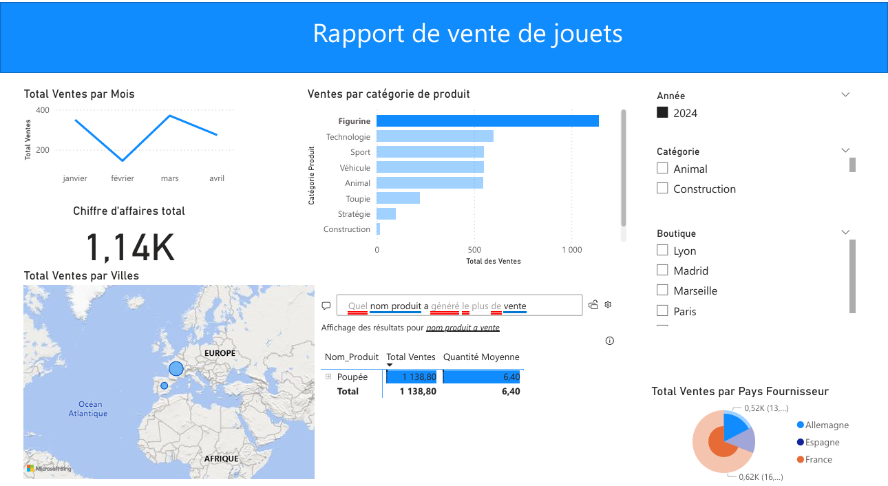
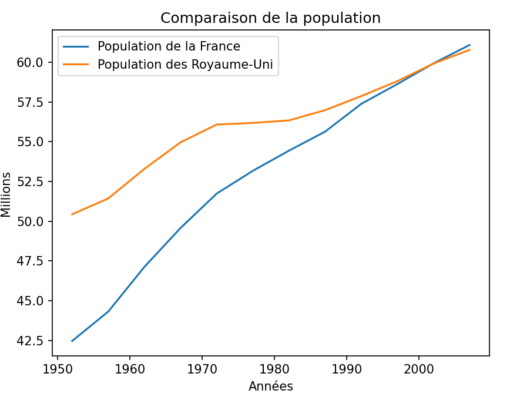

Data Scientist/Analyst passionné par les données, les modèles prédictifs et la visualisation.
Je suis un data scientist/analyst junior spécialisé en Python, Machine Learning et analyse de données. J'aime transformer des données brutes en informations claires et actionnables. Mon objectif : résoudre des problèmes complexes avec des solutions simples et élégantes.
Collecte, transformation et interprétation des données permettant à l'entreprise une prise de décision éclairée.
Récupération des données via Kaggle pour ensuite les traiter avec la librairie Panda et afficher le résultat avec la librairie Matplotlib.
Modèle NLP pour classer les tweets selon leur polarité (positif, neutre, négatif).
Voir sur GitHub📧 Email : schmitt1690@gmail.com
🌐 LinkedIn : Mon profil LinkedIn
💻 GitHub : Theosch16